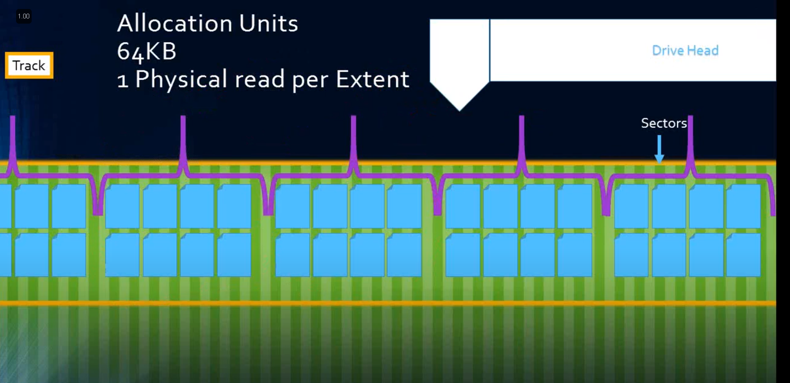
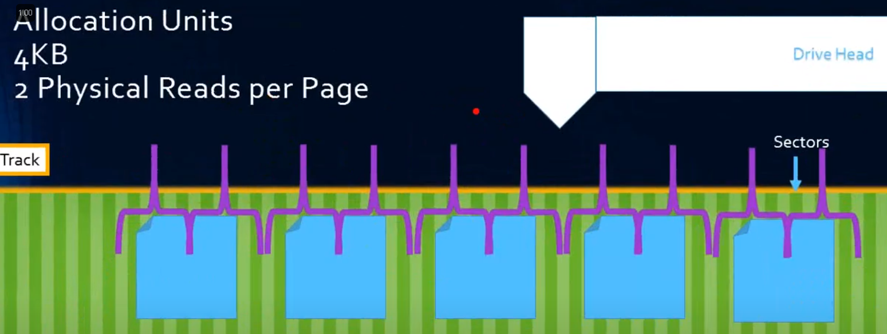
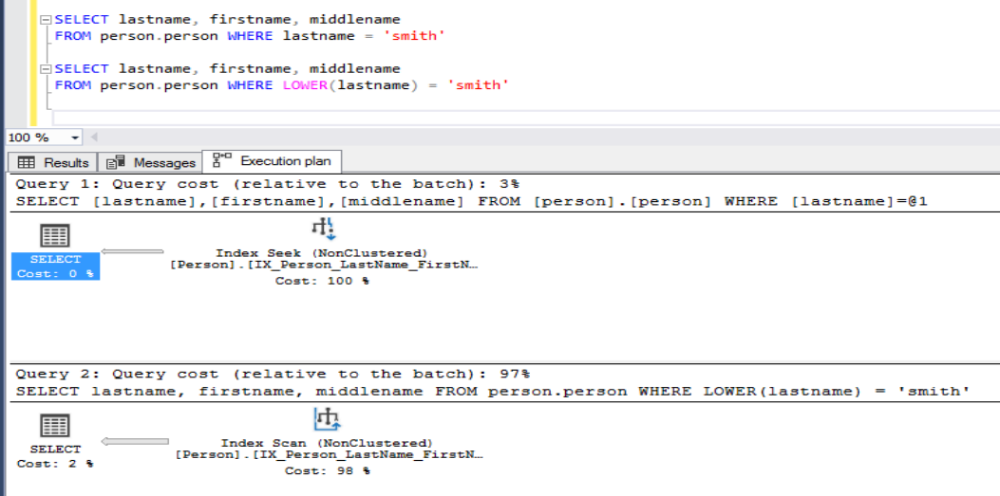

Disk Drives
- Depending on how partitions (cluster size) is formatted, disk performance can be affected.
- MS recommends formatting the clusters to 64k allocation units.
- Extents are 64K in size and this can help with Read operations since tables/indexes are organized in Extents by SQL Server.
- It aligns well with SQL Server's I/O patterns, improving performance and reducing fragmentation.
- When the disk’s allocation unit size is 64 KB, SQL Server reads and writes data efficiently in complete extents, reducing unnecessary I/O operations.


SET NOCOUNT ON
Suppresses all DONE_IN_PROC messages until enabled for the session.
Can add up to very big savings when included in any procedural code such as procedures, functions (UDFs), triggers, and batches.
Specify the schema name
Always - when creating, altering, refencing objects.
Object resolution works harder if not specified.
Can yield multiple cached plans for the same query.
Security:
- User Aaron runs EXEC sptest.
- sptest is a stored procedure lies in dbo running
SELECT * FROM test. - It will read dbo.test instead of aaron.test.
Avoid Non-SARGable conditions
SARG stands for Search ARGumentable. It refers to a type of condition in a SQL query that allows the database engine to efficiently use indexes to improve query performance. A SARGable condition is one that can leverage the database's indexing capabilities to quickly locate and retrieve rows that match the condition, rather than scanning the entire table.
Non-SARGable Conditions
Conditions that are not SARGable often involve transformations or manipulations on the column values that prevent the database engine from effectively using indexes.
- Using functions on indexed columns, such as
UPPER(columnName) = 'VALUE'. - Functions/calculations on columns of a WHERE or JOIN clause can make SQL Server ignore indexes.
- Operations that include mathematical or string manipulation on the indexed column.
- Comparisons with expressions that do not directly reference the column value.

Wildcard Searches Using %
Queries that use the LIKE clause have two simple rules:
- LIKE can use indexes if the pattern starts with a character string, such as
WHERE lname LIKE 'w%'. - LIKE cannot use an index if the pattern starts with a leading wildcard, such as
WHERE lname LIKE '%smith'.
Query Rewrite
Simplify complex queries, break them down into smaller queries, or use CTEs to improve readability and performance.
Index Fragmentation
Indexes become fragmented, leading to inefficient data retrieval.
- Rebuild.
- Reorganize.
UNION vs UNION ALL
UNION ALL performs better because of an unpublicized side-effect.
UNION eliminates duplicates by sorting.
- Can require worktable, additional sort operators.
- Can have effect on performance and tempdb.
- Can change semantics of query results.
Index scenarios
| Scenario | Index |
| WHERE a=@a AND b=@b | Index on (A, B) or (B, A) |
| WHERE a=@a AND b=@b | WHERE b=@b | Index on (B, A) |
| WHERE a=@a AND b=@b | WHERE b=@b | WHERE c=@c | Index on (B, A) | Index on (C) |
| WHERE a=@a AND b>@b | Index on (A, B) |
| WHERE a=@a AND b>@b AND c<@c | Index on (A, B, C) | Index on (A, C, B) (depends on the general selectivity of the two predicates; not the density of the column). In a scenario of "b>0 AND c<@ayearago" where b returns the whole table and c returns 2 rows, Index on (A, C, B) would be better. It is better to have a predicate that will return a least row first. Reduce the no. of rows in consideration of the query as early as possible. |
| WHERE a=@a OR b=@b | Two indexes, one on A, and one on B |
| FROM t1 JOIN t2 ON t1.c = t2.c WHERE t1.a = @a | Index on (A, C); WHERE first as it filters the rows. |
Compound Index
Most useful from the leftmost column to the rightmost column, in the order they appeared in the CREATE INDEX statement.
CREATE NONCLUSTERED INDEX ix_foo ON foo(a, b, c, d)
WHERE a = @aorWHERE a = @a AND b = @bwill access ix_foo.WHERE a = @a AND d = @dorWHERE a = @a AND c = @c AND b = @bmay only access part of ix_foo.WHERE b = @b AND c = @cwill usually ignore ix_foo.
Missing or Unused Indexes
- Identify missing indexes - Create appropriate indexes on columns used in WHERE clauses, JOIN conditions, and ORDER BY clauses.
- Remove Unused Indexes.
Parameter Sniffing
SQL Server caches an execution plan that is not optimal for all parameter values.
- Use
OPTION (RECOMPILE)hint. - Use
OPTIMIZE FORhint.
Outdated Statistics
Outdated statistics can lead to inefficient query plans.
- Ensure statistics are up to date using the UPDATE STATISTICS command or enable auto update statistics.
- Ensure that the AUTO_UPDATE_STATISTICS option is enabled.
Suboptimal JOINs
Inefficient join operations causing slow queries.
- Ensure indexes exist on columns used in join conditions.
- Use appropriate join types (INNER JOIN, LEFT JOIN, etc.) based on the data and requirements.
- Rewrite joins to use more efficient join strategies or reduce the number of joins if possible.
Inefficient Use of Cursors
Using cursors for row-by-row processing instead of set-based operations.
- Replace cursor operations with set-based operations using UPDATE, DELETE, INSERT, or MERGE statements.
- In some cases, a WHILE loop can be more efficient than a cursor.
Overuse of SELECT *
Using SELECT * retrieves all columns, leading to unnecessary data transfer and processing. Explicitly specify only the columns needed.
This can also break application code, if there are any additional/deletion of a column.
Scalar Functions in SELECT Clause
Scalar functions in the SELECT clause can be evaluated row-by-row, causing slow performance.
- Inline Functions - Use inline TVFs instead of scalar functions.
- Computed Columns - Use computed columns if the function is simple and frequently used.
IN or OR?
Both produces exact same plan.
Lock Contention
High levels of locking can cause performance bottlenecks.
- Isolation Levels - Use appropriate isolation levels like READ COMMITTED SNAPSHOT to reduce locking.
- Query Hints - Use query hints like
NOLOCKwhere dirty reads are acceptable.
SP_ prefix
- Causes metedata overhead.
- Induce needless SP:CacheMiss events.